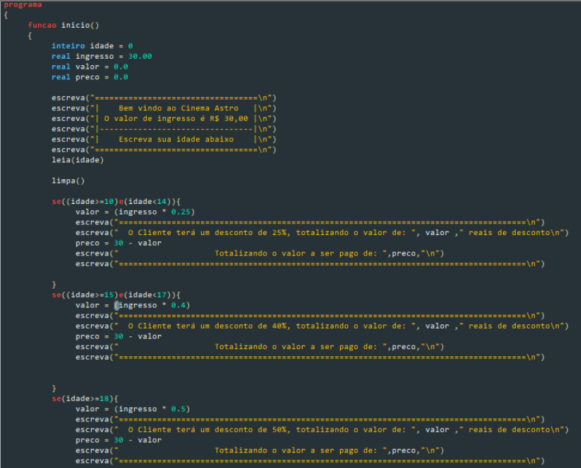

O que é o linguagem de programação?
Uma linguagem de programação é um conjunto de regras e palavras para que seja possível escrever código de computador. Ele fornece um meio para os programadores de computador escreverem a lógica, as ações que um computador deve fazer. as linguagens de programação possuem uma variedade de níveis de abstração, desde linguagens de baixo nível, que são mais parecidas com a linguagem de máquina, até linguagens de alto nível, que são mais compreendidas e mais parecidas com a linguagem humana. Exemplos de linguagens de programação incluem, Java, C++, JavaScript e muitos outros. Cada linguagem possui uma sintaxe única e também é especializada em determinados objetivos.
- 1° Tipo de Ordenação -
- Quick Sort -
O Quick sort é um algoritmo de classificação eficiente que segue o paradigma de dividir e conquistar. Escolhe uma "base", reorganiza os elementos em torno do ponto de articulação e repete o processo recursivamente nas partições resultantes. Em muitos casos, isso acontece muito rapidamente.
- 2° Tipo de Ordenação -
- Merge Sort -
O Merge sort é um algoritmo de classificação poderoso que divide uma lista em duas partes, classifica cada parte e depois mescla as duas partes classificadas para produzir uma lista classificada. Uma abordagem sistemática fornece desempenho previsível e eficiente para grandes conjuntos de dados.
Quick
Para ordenar em ordem crescente, pressione o botão ordenar
Merge
Para ordenar em ordem crescente, pressione o botão ordenar
- Programa do Portugol -
- Idade e Desconto -

- Programa do Portugol -
- no JS -
programa